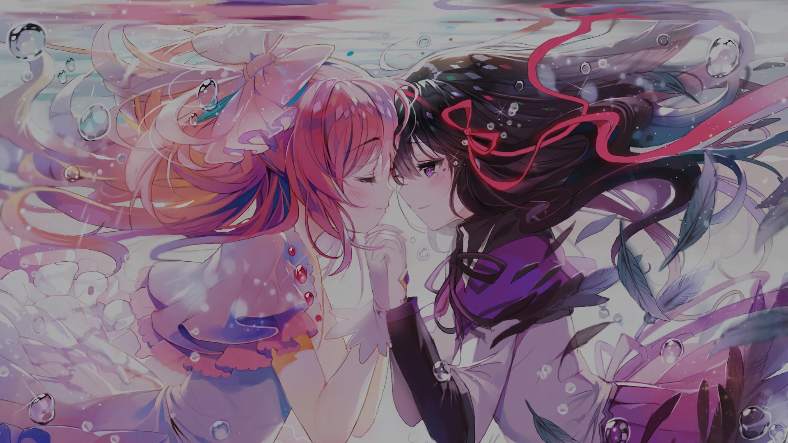

5.77
NM
NM
透ケルトン
大原櫻子
Mapper: Hishiro Chizuru
Difficulty: Lasse's Blossom
Beatmap ID: 3093632
CS
4
AR
9.0
OD
8.0

182.0

4:24

1562
5.81
NM
NM
ヒカリイロの歌
鈴木愛奈
5.83
NM
NM
明日の君さえいればいい。
ChouCho
Mapper: SayuCat_
Difficulty: Kowayu's Domestic Angels
Beatmap ID: 3847864
CS
4.5
AR
9.3
OD
9.0
178.0
4:56
1795
5.11
NM
NM
Traveller feat. moimoi
かめりあ vs. DJ Genki
5.23
NM
NM
Winter Melody
東山奈央

5.63
NM
NM
カラフル (tamame's apostate remix)
ClariS
5.85
NM
NM
World's End, Girl's Rondo(Asterisk DnB Remix)
分島花音
5.88
NM
NM
Dans la mer de son
かめりあ
![London Elektricity - Just One Second (feat. Maki Nomiya) (-Tochi) [A Beautiful World]](./darkened-backgrounds/2281164.jpg)
5.95
NM
NM
Just One Second (feat. 野宮真貴)
London Elektricity
5.99
NM
NM
Smiling
櫟井唯